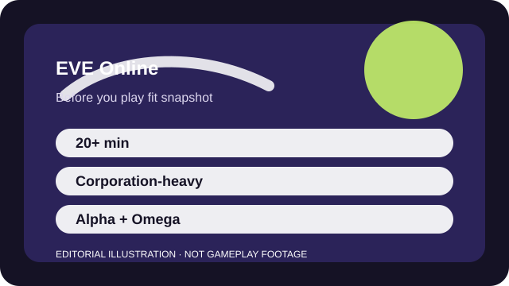

BEFORE YOU PLAY
What this page is and is not
This is a sourced editorial fit profile. It is designed to help with a yes-or-no play decision, and it does not claim a scored hands-on review.
The right question is not 'Can I play this tonight?' but 'Do I want to learn a social simulation with ships attached?' That makes EVE a narrow but powerful fit.
The first-session loop to judge is simple: Choose a role in a player-shaped economy, fly ships you can afford to lose, and let knowledge plus social ties become the real progression.
Ships are tools, not the final goal; the real progression is knowledge, industrial reach, and social position.

FIT SNAPSHOT
EVE Online at a glance
| Genre | Space MMO |
|---|---|
| Platforms | PC |
| Business model | Free Alpha access with optional Omega subscription and premium services. |
| Typical session | 20 minutes to several hours, plus out-of-game planning if you go deep. |
| Play style | player-driven economy and corporation strategy |
| Learning barrier | EVE is very high-friction up front because economy, navigation, fitting, and social context all matter together. |
| Social shape | You can explore solo, but the strongest stories and progression usually come from corporations and coordinated groups. |
WHO IT FITS
Best fit, likely friction, and the social reality
players who want a player-driven economy, corporations, and real risk attached to decisions
players who want fast onboarding, low-loss consequences, or simple menus
You can explore solo, but the strongest stories and progression usually come from corporations and coordinated groups.
Ships are tools, not the final goal; the real progression is knowledge, industrial reach, and social position.
FIRST SESSION PLAN
How to test the fit in one evening
- Finish the official career-agent path before deciding whether the menus are a deal-breaker.
- Join a new-player-friendly corporation before buying into giant ambitions.
- Fly ships you can afford to lose so fear does not distort every lesson.
- Judge the fit by whether the social strategy sounds exciting, not by how pretty the first mining session looks.
Use the first session to answer these fit questions instead of judging rank, win rate, or store value immediately.
- Do you enjoy social strategy as much as direct combat?
- Are meaningful losses exciting to you or simply stressful?
- Will out-of-game planning feel like homework or like part of the game?
TIME, COST, AND COMMITMENT
What you are really signing up for
| Session budget | 20 minutes to several hours, plus out-of-game planning if you go deep. |
|---|---|
| Social demand | You can explore solo, but the strongest stories and progression usually come from corporations and coordinated groups. |
| Progression shape | Ships are tools, not the final goal; the real progression is knowledge, industrial reach, and social position. |
| Spending pressure | Alpha access lets you sample, while Omega and optional services deepen the hobby if the wider game sticks. |
Even if daily play is short, successful long-term involvement usually means reading, planning, or coordinating outside the client.
Alpha access lets you sample, while Omega and optional services deepen the hobby if the wider game sticks.
SOURCES AND LIMITS
What was checked, and what can change
- Omega value and pack offers can change the sampling-to-hobby transition.
- Warfare balance and alliance politics can reshape what types of corporation play feel accessible.
- Tutorial tools may improve or change what the first hours emphasize.
This profile uses official game pages and defensible general product knowledge to frame the player fit. It does not claim live testing across every platform, accessibility need, or current event rotation.